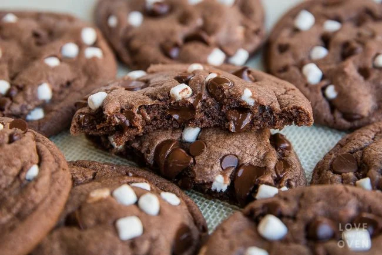

Simple and delicious cookies made with hot chocolate mix.

PREP: 10 mins COOK: 30 mins TOTAL: 40 mins SERVINGS: 36 cookies
1. Preheat oven to 350 degrees F.
2. In a mixing bowl, mix butter until light and fluffy. Add in sugars and mix until well combined. Add eggs and vanilla, mixing until just combined.
3. Combine dry ingredients in a bowl and stir to combine. Add to wet ingredients and stir to combine.
4. Scoop onto baking sheets lined with silicone baking mats or parchment paper, approximately 2-3 tablespoons of dough per scoop, and bake for approximately 9-11 minutes. Remove from oven and allow to cool at least ten minutes prior to transferring to a wire rack to finish cooling.